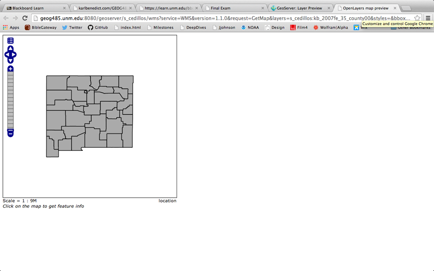
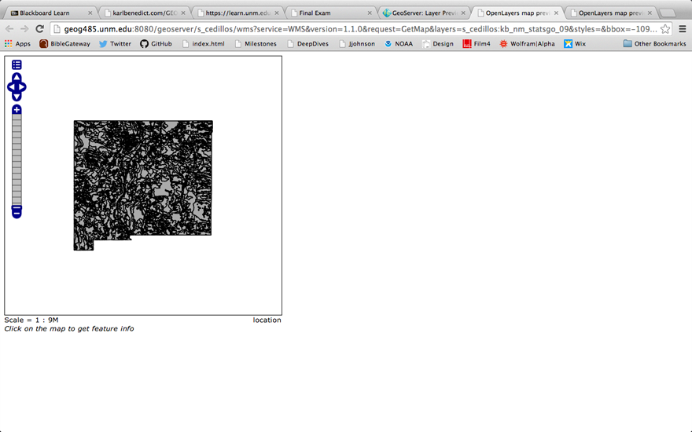
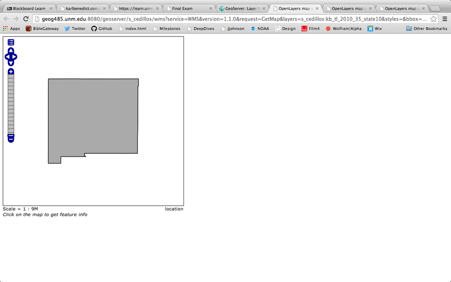

Elisa Cedillos
April 16 2014
Milestone 11
What command would you use to list the contents of a directory on a linux system?
- You would use the "ls" command.
Question 2
What command would you use to read the "manual page" for a specific command?
- You would use the "man" command by typing "man" and then the specific command.
Question3
Preview each of your added layers, using the Layer Preview tool and the Open Layers option to display the data. Include screen grabs of the previews in your write-up.
- kb_2007fe_35_county00
- 
- kb_nm_statsgo_09
- 
- kb_tl_2010_35_state10
- 